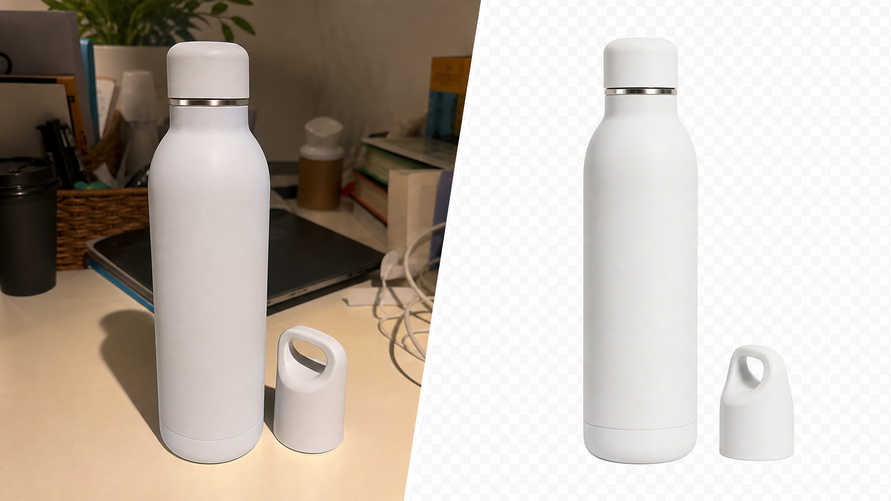

Make product grids look cleaner by removing busy backgrounds before uploading images.
For WooCommerce stores
WooCommerce product background remover
Prepare cleaner product photos for WooCommerce catalogs, category pages and product variants. Upload multiple images, remove backgrounds and export transparent PNGs or a ZIP.

Process color variants, product sets and seasonal launches without editing one file at a time.
Download a single transparent PNG or export the complete processed batch as a ZIP.
Images are processed in the browser, so the workflow stays simple for store teams.
WooCommerce workflow
Prepare product images before catalog upload
Use BatchCutout before adding new products, updating categories or preparing promotional assets.